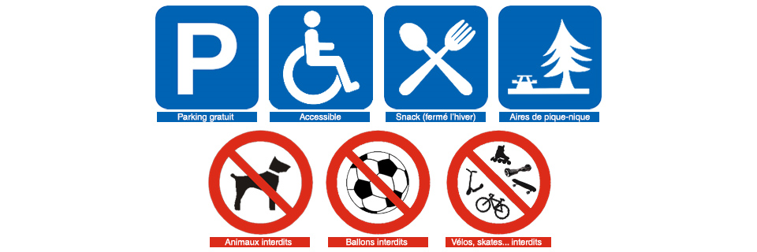

Infos pratiques
Horaires et tarifs
Notre parc est accessible aux personnes à mobilité réduite et aires de pique-nique sont à disposition.
Le snack est fermé pour l'hiver, ouverture le 1er mars 2018 !
Possibilité de sortir pour accéder aux voitures (pique-nique...) en gardant précieusement le ticket d'entrée.
Horaires
OUVERT TOUS LES JOURS, DIMANCHES ET JOURS FÉRIÉS INCLUS !
HORAIRES D'HIVER :
Du 29 octobre 2017 au 24 mars 2018
OUVERTURE DES CAISSES :
de 10h00 à 16h00
Fermeture du parc à 17h00.
HORAIRES D'ÉTÉ :
du 25 mars 2018 au 27 octobre 2018
OUVERTURE DES CAISSES :
de 9h00 à 18h00
Fermeture du parc à 19h00.
Fermeture du parc sans préavis possible selon les conditions climatiques :
neige/gel... Fermé le 25 Décembre.
Note : Les animaux sont rentrés petit à petit au cours de la dernière heure avant la fermeture.
Nos tarifs
Moins de 3 ans : gratuit
Jusqu'à 10 ans : 11,00€
Plus de 10 ans : 15,00€
Modes de règlement :
Espèces, Chèques, Cartes Bancaires, Chèques Vacances : acceptés pour l'entrée du parc uniquement, monnaie non rendue, non valables sans le talon (partie haute)